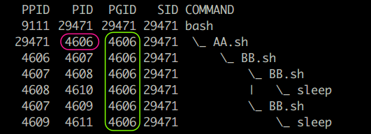
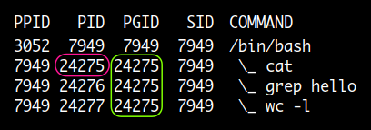
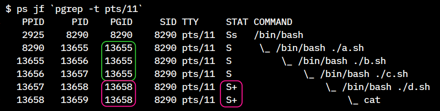
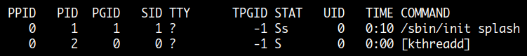
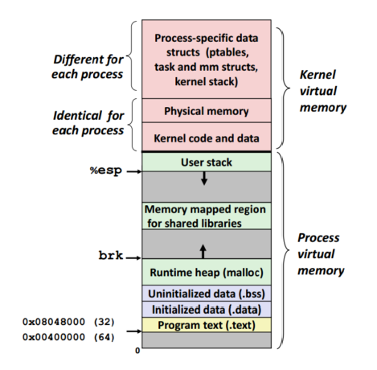
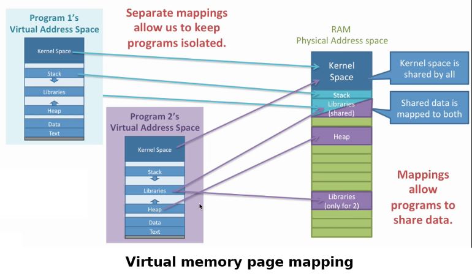
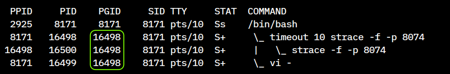
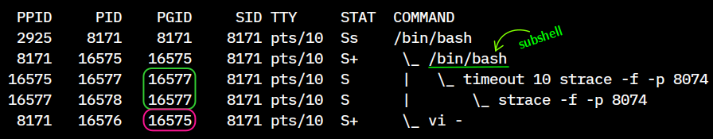

Session 과 Process group
쉘 스크립트 파일을 실행하면 내부적으로 여러 명령들을 pipe 로 연결해 실행할수도 있고
& 문자를 이용해 background 로 명령들을 동시에 실행할 수도 있습니다.
각각의 명령들은 고유의 PID 를 갖고 실행이 되는데요.
이때 실행중인 스크립트 파일을 종료하려면 실행중인 모든 프로세스들에 종료 신호를
보내야 됩니다.
따라서 관련된 프로세스들을 좀 더 쉽게 제어하기 위해 process group 을 만들어 사용합니다.
process group 에 신호를 보내면 같은 그룹에 속한 모든 프로세스들에 신호가 전달됩니다.
session 은 process group 을 포함하는 개념으로 하나의 session 에는 여러개의 process group 이 있을수 있습니다. 보통 session 은 하나의 controlling terminal 과 연결되는데 여러 process group 들중에 하나만 foreground process group 이 되게 제어하고, 사용자로 부터 입력을 받고, 메시지를 출력하고, 신호를 전달하는 역할을 합니다. ( 사용자가 Ctrl-c 를 누르면 foreground process group 에 INT 신호가 전달되고, 터미널을 종료하여 session 이 종료될때는 모든 process group 에 종료 신호가 전달됩니다.)
예를들어 터미널을 열면 shell 이 실행되는 이때 shell PID 가 Session ID (SID) 가 되며 session leader ( PID == SID ) 가 됩니다. 이후 프롬프트를 통해 명령을 실행시켜 생성되는 자손 process 들은 모두 같은 SID 를 갖게됩니다.
프롬프트 에서 쉘 스크립트가 실행되면 process group 이 만들어 지는데 이때 스크립트 PID 가 Process Group ID (PGID) 가 되며 process group leader ( PID == PGID ) 가 됩니다. 새로 생성되는 프로세스는 부모 프로세스의 PGID 를 상속하므로 이후 스크립트 내에서 실행되는 프로세스 들은 모두 같은 PGID 를 갖게됩니다.
다음은 프롬프트 상에서 AA.sh 스크립트를 실행한 예입니다. 모두 bash shell PID 를 SID 로 가지고 있고 AA.sh PID 가 PGID 로 사용된 것을 볼 수 있습니다.

파이프를 통해 여러 명령을 동시에 실행시킬 때도 process group 이 만들어지는데 이때는 파이프로 연결된 명령들중에 첫번째 명령이 PGID 와 process group leader 가 됩니다. ( 스크립트 내에서 실행될 경우는 스크립트 PGID 를 따릅니다.) 다음은 프롬프트 상에서 cat | grep hello | wc -l 명령을 실행한 예입니다. 모두 bash shell PID 를 SID 로 가지고 있고 파이프로 연결된 명령 중에 첫번째 명령의 PID 가 PGID 로 사용된 것을 볼 수 있습니다.

이와 같이 process group 은 job control 을할때 기본단위 ( job ) 가 됩니다. 하나의 session 에서는 하나의 process group 만 foreground 가 될수있고 나머지는 background 가 됩니다.
실행되는 모든 프로세스는 프로세스 그룹에 속하게 되고, 또한 프로세스 그룹은 세션에 속하게 됩니다.
조회하고 신호보내기
현재 실행되고 있는 프로세스 들의 PPID, PID, PGID, SID 관계는 다음과 같이 ps 명령을 통해
알아볼 수 있고 pgrep , pkill 명령을 사용하면 process group 이나 session 별로
조회하거나 시그널을 보낼 수 있습니다.
# 다음 명령을 이용하면 프로세스의 group id 와 session id 정보를 볼 수 있습니다.
$ ps jf
$ ps fo user,ppid,pid,pgid,sid,stat,comm
# 특정 명령의 이름을 가지고 PID 를 구하는 방법
$ ps -C test.sh -o pid=
$ pgrep -x test.sh
# 특정 프로세스의 PGID (Process Group ID) 와 SID (Session ID) 를 구하는 방법
$ ps -o pgid= 1234 # PID 가 1234 인 프로세스의 PGID 를 출력
$ ps -o sid= 1234 # PID 가 1234 인 프로세스의 SID 를 출력
$ ps -o pgid= -C test.sh # 명령 이름이 test.sh 인 프로세스의 PGID 를 출력
$ ps -o sid= -C test.sh # 명령 이름이 test.sh 인 프로세스의 SID 를 출력
# 다음은 test.sh 명령과 같은 PGID 를 갖는 프로세스들을 모두 출력합니다.
$ ps -o pid= $(ps -o pgid= -C test.sh | sed 's/^/-/')
$ pgrep -g $(ps -o pgid= -C test.sh | paste -sd,)
# 다음은 test.sh 명령과 같은 SID 를 갖는 프로세스들을 모두 출력합니다.
$ ps -o pid= $(ps -o sid= -C test.sh | sed 's/^/+/')
$ pgrep -s $(ps -o sid= -C test.sh | paste -sd,)
ps명령에서는 숫자 앞에-가 붙으면 PGID 가 되고+가 붙으면 SID 가 됩니다.
실행중인 스크립트를 종료하는 방법
스크립트를 종료할 때는 jobspec 을 이용하거나 PGID 를 이용해 process group 에 신호를 보내야 합니다. 또는 Ctrl-c 키를 누르는 것도 process group 에 신호를 보내는 방법 중에 하나입니다. 그렇지 않고 스크립트 PID 에만 신호를 보내게 되면 child process 는 종료되지 않고 남아 있게 됩니다. 다음은 ping 외부 명령을 실행하고 있는 스크립트에 PID 를 이용해 종료 신호를 보낸 경우인데 child process 인 ping 명령은 종료되지 않은 체 남아 있습니다.
-------- test.sh --------
#!/bin/bash
echo test.sh ... start
ping 0.0.0.1
echo test.sh ... end
-------------------------
$ ./test.sh &
# test.sh 스크립트 실행후 같은 PGID 를 갖는 프로세스 조회
$ ps jf $(pgrep -g $(ps -o pgid= -C test.sh | head -n1))
PPID PID PGID SID TTY TPGID STAT UID TIME COMMAND
4655 18946 18946 4655 pts/14 19642 S 1000 0:00 /bin/bash ./test.sh
18946 18949 18946 4655 pts/14 19642 S 1000 0:00 \_ ping 0.0.0.1
# test.sh 스크립트 PID 를 이용해 종료
$ kill 18946
# child process 인 ping 명령은 종료되지 않고 PPID 가 init 으로 바뀌어 남아있다.
$ ps j -C ping
PPID PID PGID SID TTY TPGID STAT UID TIME COMMAND
1 18949 18946 4655 pts/14 19688 S 1000 0:00 ping 0.0.0.1
따라서 다음과 같이 PGID 를 이용해 스크립트를 종료해야 합니다.
- kill -- -1234 ( PGID 앞에
-문자를 붙인다. ) - pkill -g 1234
$ test.sh &
$ ps j -C test.sh
PPID PID PGID SID TTY TPGID STAT UID TIME COMMAND
23973 25517 25517 23973 pts/16 25517 S+ 1000 0:00 /bin/bash ./test.sh
# test.sh 스크립트 PGID 를 이용해 종료
$ kill -- -25517
# 같은 PGID 를 갖는 ping 명령도 함께 종료되었다.
$ ps j -C ping
PPID PID PGID SID TTY TPGID STAT UID TIME COMMAND
Session 이 종료될때 같은 Session ID 를 갖는다고 모두 종료되는것은 아니다.
가령 fork() 에의해 부모 프로세스가 먼저 종료하여 child process 의 부모가 init 이나 systemd 로 reparent 될경우 같은 session id 를 갖고 있어도 child process 는 종료되지 않습니다.
새로운 session id 로 실행하기
스크립트를 background 로 실행시킬때 setsid 명령을 이용하면 새로운 SID, PGID 가 할당되고 PPID 도 init 으로 바뀌어 실행됩니다.
SID 가 바뀌므로 기존의 controlling terminal 에서 떨어져 나가 HUP, INT 같은 신호도 전달되지 않게 됩니다.
그리고 controlling terminal 에 해당하는 /dev/tty 도 사용할 수 없습니다.
parent 도 init 이 되므로 스크립트를 daemon 으로 실행시키는 효과를 갖습니다.
$ cat test.sh
#!/bin/bash
echo start .....
ls -l /dev/fd/ > /dev/tty # controlling terminal 로 출력
echo end .....
$ ./test.sh
start .....
total 0
lrwx------ 1 mug896 mug896 64 Mar 13 23:54 0 -> /dev/pts/15
l-wx------ 1 mug896 mug896 64 Mar 13 23:54 1 -> /dev/tty
lrwx------ 1 mug896 mug896 64 Mar 13 23:54 2 -> /dev/pts/15
lr-x------ 1 mug896 mug896 64 Mar 13 23:54 3 -> /proc/15343/fd
end .....
# controlling terminal 을 갖지 않게되어 /dev/tty 를 사용할 수 없다.
$ setsid ./test.sh
start .....
./test.sh: line 5: /dev/tty: No such device or address
end .....
daemon 만드는 방법
$ setsid daemon.sh > /dev/null 2>&1 < /dev/null
PGID 를 변경하여 child process 실행
스크립트를 a.sh -> b.sh -> c.sh -> d.sh 순서로 실행하여 현재 sleep 상태에 있다면 Ctrl-c 를 누를경우 tty driver 에 의해 INT 신호가 foreground process group 에 전달되어 4개의 프로세스는 모두 종료하게 됩니다. 이때 만약에 c.sh 에서 d.sh 을 실행할때 PGID 를 변경할수 있다면 c.sh 과 d.sh 까지만 종료하고 a.sh, b.sh 은 나머지 명령이 실행되게 할 수 있습니다.
shell 에서는 setsid 외부 명령을 사용하여 SID, PGID 를 변경해 명령을 실행할수 있지만
setpgid 같은 명령은 없습니다.
하지만 간접적으로 set -o monitor 옵션 설정을 통해서 이후에 실행되는 명령이
다른 PGID 를 갖게 할 수 있습니다.
$ cat a.sh $ cat b.sh $ cat c.sh $ cat d.sh
#!/bin/bash #!/bin/bash #!/bin/bash #!/bin/bash
echo start a.sh echo start b.sh echo start c.sh echo start d.sh
./b.sh ./c.sh ./d.sh cat
echo end a.sh echo end b.sh echo end c.sh echo end d.sh
# d.sh 에서 cat 명령에 의해 블록됐을때 ctrl-c 를 입력하면
# 같은 PGID 를 갖는 a.sh b.sh c.sh d.sh 이 모두 종료된다.
$ ./a.sh
start a.sh
start b.sh
start c.sh
start d.sh
^C # 모두 종료된다.
이번에는 c.sh 에 set -o monitor 옵션을 추가
$ cat c.sh $ ./a.sh
#!/bin/bash start a.sh
start b.sh
echo start c.sh start c.sh
start d.sh
set -o monitor ^Cend b.sh # ctrl-c 를 입력하면 c.sh d.sh 만 종료가 되고
./d.sh end a.sh # b.sh a.sh 은 나머지 명령들이 실행된다.
echo end c.sh

Quiz
ps axj 명령을 실행해 보면 맨 위에서 다음 두 항목을 찾을 수 있는데요.
하나는 시스템의 시작과 종료, 프로세스 생성, 모니터링에 관계된 init 이고
다른 하나는 kernel thread 를 생성하는 kthreadd 입니다.
그런데 모두 PPID 가 0 번인 것을 볼 수 있습니다.
PID 0 은 어떤 프로세스일까요?

kernel 초기화 단계에서 실행되는 startup function 을 swapper 또는 process 0 으로 부릅니다.
여기서는 paging 관련 메모리 설정, interrupt handling 설정, 커널에서 사용하는
구조체 설정 등 여러 가지 초기화 작업을 하고 첫 번째 user space 프로세스인 PID 1 번 init 과
kernel space 프로세스인 PID 2 번 kthreadd 을 생성합니다.
이후에는 idle 상태가 되어서 시스템 내에 running 프로세스가 없을 경우 반복적으로 hlt 어셈블리 명령을 실행합니다.
init 프로세스는 원래 커널 스레드였는데 이후에 exec() 시스템콜을 실행하여
user space 프로세스가 되어 이름에 [ ] 가 없습니다.
따라서 모든 user space 프로세스는 init 의 자손 프로세스가 되고, 모든 kernel space 프로세스는 kthreadd 의 자손 프로세스가 됩니다.
idle 프로세스도 프로세스이므로 시스템에는 항상 프로세스가 존재하는 것과 같습니다.
# 시스템 내의 모든 kernel space 프로세스를 출력하려면 PPID 가 2 번인 프로세스를 출력하면 된다.
$ ps f --ppid 2 2
PID TTY STAT TIME COMMAND
2 ? S 0:00 [kthreadd]
3 ? I< 0:00 \_ [rcu_gp]
4 ? I< 0:00 \_ [rcu_par_gp]
8 ? I< 0:00 \_ [mm_percpu_wq]
9 ? S 0:48 \_ [ksoftirqd/0]
10 ? I 20:53 \_ [rcu_sched]
11 ? S 0:06 \_ [migration/0]
12 ? S 0:00 \_ [idle_inject/0]
14 ? S 0:00 \_ [cpuhp/0]
15 ? S 0:00 \_ [cpuhp/1]
. . . .
. . . .
# kernel space 프로세스를 제외하고 ( --deselect ) 출력하면 모든 user space 프로세스가 된다.
$ ps f --deselect --ppid 2 2
커널의 경우 하드웨어 인터럽트가 발생하거나, system call, exception 이 발생했을때 현재 실행 중인 프로세스가 중단된 상태에서 kernel mode 로 진입하여 실행되는 형태이므로 따로 프로세스라는 개념이 없습니다( 커널 스레드는 제외 ). 아래 그림은 실제 프로세스 주소공간을 (virtual address space) 나타내는데요. 커널 코드와 데이터가 위치한 커널 쪽 주소는 shared library 처럼 모든 프로세스에서 공유되므로 스케줄러에 의해 다른 프로세스로 스위칭이 되어도 항상 실행될 수가 있습니다. 또한 user mode 에서 접근할 경우 page fault 가 발생하므로 접근할 수가 없습니다.


Quiz
파이프를 이용해 명령들을 연결해서 실행하면 프로세스 그룹이 생성되고 Ctrl-c 를 입력하게 되면 해당 그룹에 속한 모든 프로세스들에 SIGINT 신호가 전달되어 종료하게 됩니다. 실제 신호가 전달되는 것을 C 언어로 작성해 확인해 보는 것입니다.
$ cat test.c
#include <stdio.h>
#include <signal.h>
#include <stdlib.h>
#include <unistd.h>
void signal_handler(int sig) {
switch (sig) {
case SIGINT:
printf("\n>>> %d: received %d (SIGINT).\n", getpid(), sig);
break;
case SIGQUIT:
printf("\n>>> %d: received %d (SIGQUIT).\n", getpid(), sig);
exit(sig);
}
}
int main()
{
signal(SIGINT, signal_handler); // Ctrl-c
signal(SIGQUIT, signal_handler); // Ctrl-\
while (1) {
printf("%d: working...\n", getpid());
sleep(1);
}
}
$ gcc test.c
$ ./a.out >&2 | ./a.out >&2 | ./a.out
264649: working...
264650: working...
264648: working...
264649: working...
264650: working...
264648: working...
^C
>>> 264649: received 2 (SIGINT).
>>> 264650: received 2 (SIGINT).
264649: working...
>>> 264648: received 2 (SIGINT).
264650: working...
264648: working...
264649: working...
264650: working...
264648: working...
^C
>>> 264648: received 2 (SIGINT).
264648: working...
>>> 264649: received 2 (SIGINT).
>>> 264650: received 2 (SIGINT).
264649: working...
264650: working...
264648: working...
264649: working...
264650: working...
^\
>>> 264650: received 3 (SIGQUIT).
>>> 264649: received 3 (SIGQUIT).
>>> 264648: received 3 (SIGQUIT).
2.
다음은 터미널을 두개 열어서 한쪽에서는 date 명령을 실행하고 한쪽에서는 sh 프로세스를 strace 하려고 한것인데요. 그런데 실행을 해보면 timeout 에의해 strace 명령이 종료될 때 vi 명령도 함께 종료가 되어 제대로 결과를 얻을 수가 없습니다. 어떻게 하면 vi 명령은 함께 종료되지 않게 할 수 있을까요?
아래 명령 사용 동영상은 여기 (후반부) 에서 볼 수 있습니다.
# terminal 1
$ timeout 10 strace -f -p 1234 |& vi - # terminal 2 의 sh 프로세스를 strace
# terminal 2
sh$ echo $$
1234
sh$ date; date; date
이와 같은 결과가 생기는 이유는 파이프로 연결된 명령들은 실행될 때 같은 process group 을
형성하기 때문입니다.
timeout 에의해 종료 신호가 전달될 때는 PGID 를 이용해 process group 에 전달되므로
같은 그룹에 속하는 vi 명령도 함께 종료가 됩니다.
따라서 이때는 { ;} 를 이용하여 process group 을 분리해 주어야 합니다.
보통
{ ;}을 이용해 명령을 실행해도 같은 process group 을 갖게 되지만 bash 에서는 timeout 명령이 실행될 때 process group 이 분리됩니다. (sh에서는 분리되지 않음 )
# PGID 가 같아서 timeout 에의해 strace 명령이 종료될 때 vi 도 함께 종료된다.
$ timeout 10 strace -f -p 1234 |& vi -

# { ;} 를 이용하면 subshell 이 생성되고 process group 이 분리된다.
$ { timeout 10 strace -f -p 1234 ;} |& vi -

sh 에서는 다음과 같이 setsid 명령을 사용하면 가능합니다.
$ setsid timeout 10 strace -f -p 1234 2>&1 | vi -